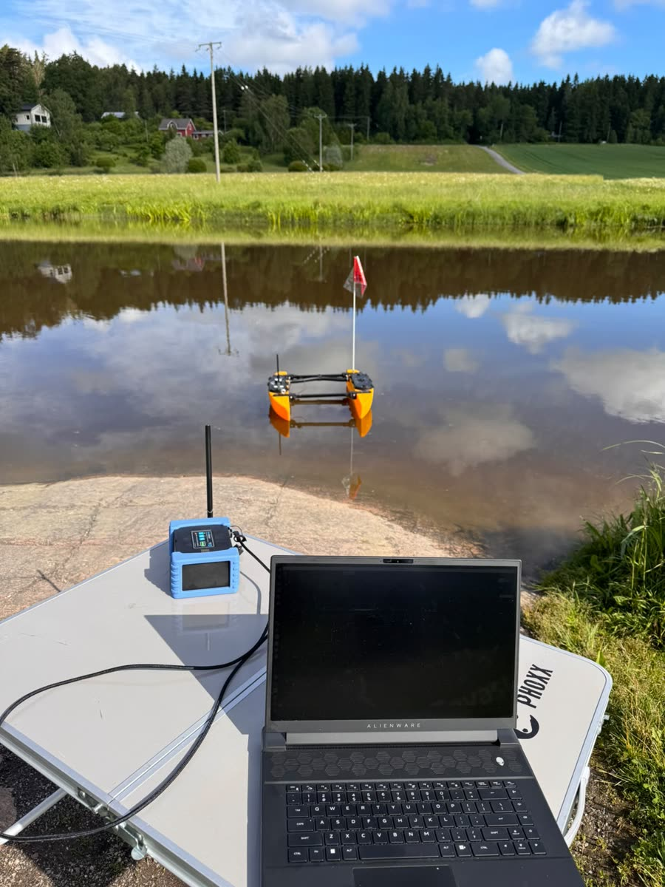
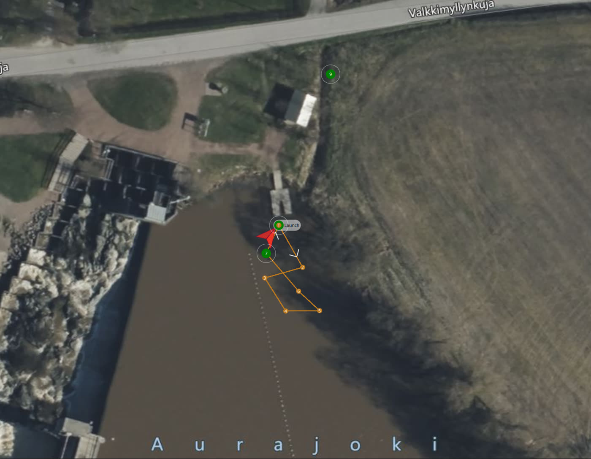
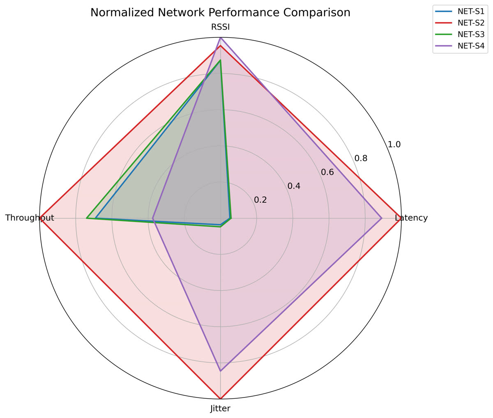
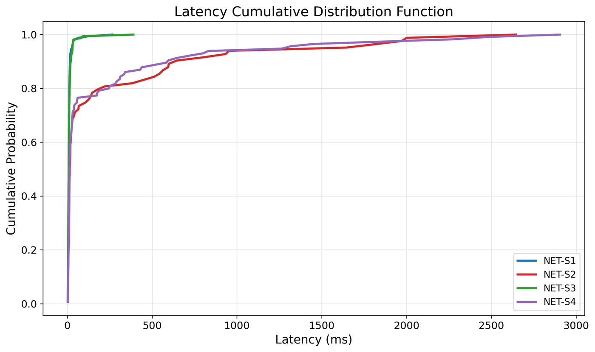

Why it matters
An autonomous boat is only as reliable as its link to the shore. Before building autonomy on the department's BlueBoat, I needed to know how the wireless network and ROS 2 actually behave on the water: how much delay, how much variation, and what happens behind an obstacle or through a relay.
Setup
- Boat: Blue Robotics BlueBoat with a Raspberry Pi 4 running BlueOS and ArduPilot, plus a USB camera. In the first campaign it also carried a Cerulean multibeam echosounder and side-scan sonar.
- Network: MikroTik GrooveA 52 ac radios on the boat, the shore and a relay node, forming a Wi-Fi mesh with static IPs.
- Ground station: Ubuntu laptop running ROS 2, acting as NTP server. The boat's clock was synchronised with Chrony so one-way latency could be measured.
- ROS 2: a publisher on the boat and a subscriber on the laptop, timestamping every message end to end.

Two field campaigns
June 2026: first deployment
Assembled boat on the water: manual and autonomous waypoint runs, sonar sessions and QGroundControl telemetry logs.

July 2026: communication evaluation
Four controlled scenarios, run once for network measurements and once for ROS 2 latency, on a 15 × 50 m waypoint track:
| Scenario | Relay | Obstacle | ROS 2 mean latency |
|---|---|---|---|
| S1 | No | No | ≈ 1.98 ms |
| S2 | No | Concrete building | ≈ 5.10 ms |
| S3 | Yes | No | ≈ 8.53 ms (median < 3 ms) |
| S4 | Yes | Concrete building | ≈ 10.55 ms (p95 ≈ 58 ms) |
A second set of experiments raised the ROS 2 publishing frequency during autonomous waypoint navigation (with relay) and manual teleoperation (without relay).
Findings
- Line of sight gave the lowest latency, highest throughput and strongest signal.
- A building in the path increased latency and, more importantly, its variability.
- The relay extended range while keeping performance stable, at the cost of a small forwarding delay.
- Most end-to-end delay came from the wireless link. ROS 2 itself added little.
- Average latency alone is misleading: worst-case (tail) latency matters for time-critical control.


All datasets, ROS 2 code, plotting scripts, radio configuration backups and the 55-page technical report are in the repository.